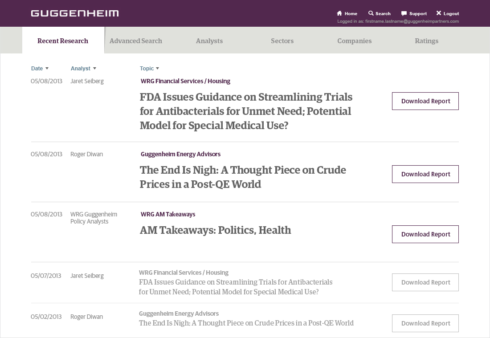
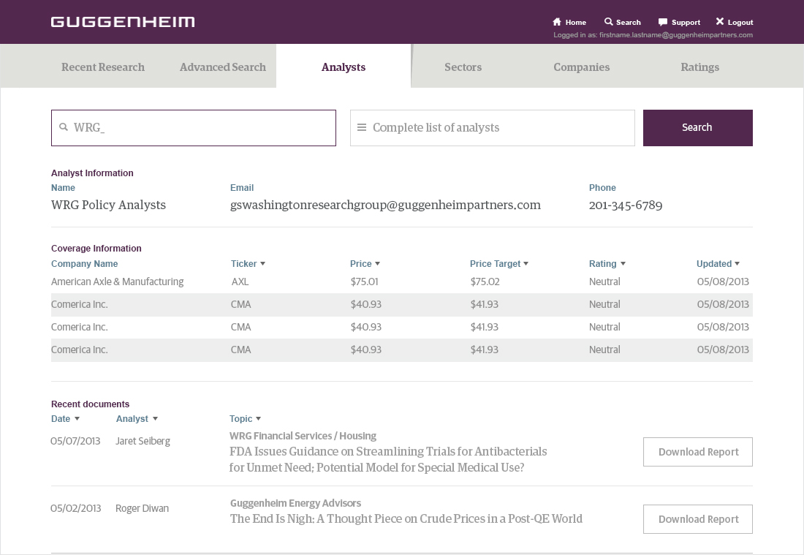

This portal serves as a central spot for institutional investors to access the latest research and analyst reports. My role included setting direction for the user experience, visual design, and user interface, as well as providing detailed CSS for the build-out.

- 

- 